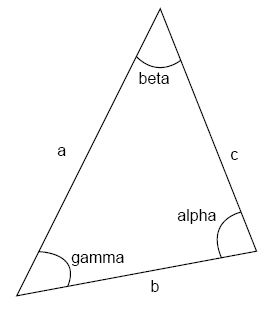
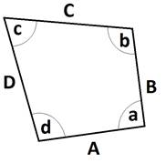

Поддерживаемые функции могут использоваться для записи выражения.

Тригонометрические функции
Каждая функция возвращает действительное числовое значение. По умолчанию тригонометрические функции используют радианы для вычисления углов. Вы можете добавить к имени функции символ «d», чтобы использовать градусы, например, sind(), sasad() и sasssa1d().
Все стандартные тригонометрические функции реализованы так, чтобы максимально походить на функции из стандартной математической библиотеки C. Таким образом, радианы являются единицей измерения по умолчанию. Это отличается от функций преобразования матриц, которые работают с использованием градцсов.
Вы можете указать единицу измерения, но не забывайте всегда использовать каноническую единицу измерения углов. Например, sin(45 {deg}) и sind(.5 {rad}) являются допустимыми выражениями.
Единичная окружность
Название |
Описание |
|---|---|
sin(a) |
Синусоидальная функция. |
cos(a) |
Косинусная функция. |
tan(a) |
Тангенс функции. |
asin(a) |
Функция обратного синуса. |
acos(a) |
Функция обратного косинуса. |
atan(a) |
Функция обратного тангенса. |
atan2(a, b) |
Если а отличен от нуля, вычисляет арктангенс b/a ; pi/2. |
Общие треугольники

Название |
Описание |
|---|---|
sasa(a, beta, c) |
Возвращает значение альфа. |
sass(a, beta, c) |
Возвращает значение b. |
sssa(a, b, c) |
Возвращает значение альфа. |
Четырехугольники

Название |
Описание |
|---|---|
sasasa(A, a, B, b, C) |
Возвращает значение c. |
sasass(A, a, B, b, C) |
Возвращает значение d. |
sasssa1(A, a, B, C, D) |
Возвращает значение b. |
sasssa2(A, a, B, C, D) |
Возвращает значение c. |
Функции преобразования угла
Название |
Описание |
|---|---|
degree(a) |
Преобразует заданное значение радиана в значение градуса. |
radian(a) |
Преобразует заданное значение градуса в значение радиана. |
Степенные функции
Название |
Описание |
|---|---|
pow(a, b) |
Возвращает а в степени b. |
sqrt(a) |
Возвращает квадратный корень из а. |
exp(a) |
Возвращает значение e в степени а . |
log(a) |
Возвращает натуральный логарифм а. |
log10(a) |
Возвращает логарифма числа а по основанию 10 |
Гиперболические функции
Название |
Описание |
|---|---|
sinh(a) |
Гиперболическая синусоидальная функция. |
cosh(a) |
Функция гиперболического косинуса. |
tanh(a) |
Функция гиперболического тангенса. |
Векторные и матричные функции построения
Следующие функции могут использоваться для возврата вектора или матрицы в выражении.
Название |
Описание |
|---|---|
AxisAngle(i, j, k, angle) |
Возвращает единичную матрицу, повернутую вокруг заданной оси и угол. |
Euler(a, b, c) |
Возвращает матрицу с заданными углами Эйлера и нулевой позицией. |
Identity() |
Возвращает единичную матрицу. |
IJK(i, j, k) |
Возвращает единичную матрицу с осью приближения (осью Z), параллельной заданному вектору. |
Pos(x, y, z) |
Возвращает единичную матрицу, переведенную в заданную позицию. |
Quaternion(q1, q2, q3, q4) |
Возвращает единичную матрицу, повернутую с заданными значениями кватерниона. |
Rx(angle) |
Возвращает единичную матрицу, повернутую вокруг оси X на заданный угол. |
Ry(angle) |
Возвращает единичную матрицу, повернутую вокруг оси Y на заданный угол. |
Rz(angle) |
Возвращает единичную матрицу, повернутую вокруг оси Z на заданный угол. |
Set(v1, v2, ..., v16) |
Возвращает матрицу, инициализированную заданными значениями, где v1...v4 — значения N векторов, v5...v8 — значения векторов O, v9...v12 — значения векторов A, а v13...16 — значения векторов P. |
Sx(factor) |
Возвращает единичную матрицу, масштабированную по оси X с заданным коэффициентом. |
Sy(factor) |
Возвращает единичную матрицу, масштабированную по оси Y с заданным коэффициентом. |
Sz(factor) |
Возвращает единичную матрицу, масштабированную по оси Z с заданным коэффициентом. |
Tx(dist) |
Возвращает единичную матрицу, сдвинутую по оси X на заданное расстояние. |
Ty(dist) |
Возвращает единичную матрицу, сдвинутую по оси Y на заданное расстояние. |
Tz(dist) |
Возвращает единичную матрицу, сдвинутую по оси Z на заданное расстояние. |
Vector(x, y, z) |
Возвращает вектор с заданными координатами XYZ. |
Vector(x, y, z, w) |
Возвращает вектор с заданными координатами XYZ и значением W. |
WPR(w, p, r) |
Возвращает единичную матрицу, повернутую на заданные углы рыскания, тангажа и крена. |
Разные функции
Название |
Описание |
|---|---|
abs(x) |
Возвращает абсолютное значение |x|. |
ceil(x) |
Возвращает наименьшее целое число, большее или равное x. Примечание: Тип возвращаемого значения является вещественным значением. |
floor(x) |
Возвращает наибольшее целое число, меньшее или равное x. Примечание: Тип возвращаемого значения является вещественным значением. |
inrange(a, b, c) |
Возвращает Истина, если b находится в пределах отрезка а и с ; |
max(a, b) |
Возвращает а или b, в зависимости от того, что является наибольшим значением. |
min(a, b) |
Возвращает а или b, в зависимости от того, что является наименьшим значением. |
mod(a, b) |
Возвращает остаток а/b. |
ramp(x, x1, y1, x2, y2) |
Возвращает значение y, соответствующее x в строке (x1, y1) - (x2, y2). |
range(a, b, c) |
Возвращает а если b меньше чем а. Возвращает b если b находится в пределах отрезка а и с. Возвращает с если b больше, чем с. |
round(x) |
Возвращает целое число, ближайшее к x. Эта функция округляет в большую сторону, если x находится ровно посередине между целыми числами. Примечание: Тип возвращаемого значения является вещественным значением. |
Псевдослучайные функции распределения
Распределение
Название |
Описание |
|---|---|
normal(u, s) |
Нормальное распределение среднего значения u и стандартное отклонение s. |
lognormal(u, s) |
Логарифмическое нормальное распределение для среднего значения u и стандартное отклонение s. |
uniform(a, b) |
Равномерное распределение по диапазону а <= х < b. |
exponential(lambda) |
Экспоненциальное распределение, где среднее значение равно 1/ lambda и дисперсия 1/ lambda^ 2. |
gamma(k, theta) |
Гамма-распределение с формой k и масштаб theta. |
triangular(min, mode, max) |
Треугольное распределение для данный min, mode и max значений. |
weibull(k, lambda) |
Распределение Вейбулла с формой k и масштаб lambda. |
Случайный поток
Название |
Описание |
|---|---|
normal(stream, u, s) |
То же, что и функции распределения, но с аргументом потока. |
lognormal(stream, u, s) |
|
uniform(stream, a, b) |
|
exponential(stream, lambda) |
|
gamma(stream, k, theta) |
|
triangular(stream, min, mode, max) |
|
weibull(stream, k, lambda) |